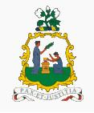

San Vicente
|  |
Información general
Nombre oficial: San Vicente y las Granadinas.
Área: 388 km².
Costas: 84 km.
División política: 5 parroquias
- Charlotte
- St. George
- St. Andrew
- St. David
- St. Patrick
Unidad monetaria: Dólar Caribe-Este
1 Dólar Caribe-Este = 100 centavos.
Idiomas: Inglés (oficial); hindi (no oficial).
Fiesta nacional: 27 de octubre, Día de la Independencia.
Gentilicio: de San Vicente y las Granadinas.
Hora oficial: GMT -4 horas (normal/verano).
Miembro de: ONU, OEA, CARICOM, Commonwealth.
Curiosidades
Además de la isla principal el país comprende la parte norte de la cadena de islas de las Granadinas que se extiende entre San Vicente y Granada.
La isla de Mustique ha logrado celebridad como lugar de veraneo de la familia real británica.
Perfil Ecónomico
Perfil Demográfico
Población: 119.000 hab.
Densidad de población: 280 hab/km².
Perfil Cultural
Alfabetismo: 96%.
Religión:
- Protestantes: 76,0%
- Católicos: 10,0%
- No religiosos: 14,00%
Sistema de Gobierno
Constitución vigente: 27 de octubre de 1979.
Sistema ejecutivo: Monarca británico (Jefe de Estado, representado por el Gobernador General), Primer Ministro (Jefe de Gobierno), Gabinete.
Sistema legislativo: Gobernador General y la Asamblea (seis senadores designados por el Gobernador General y quince representantes elegidos para un término de cinco años).
Aproximación histórica
San Vicente y las Granadinas es un grupo de islas que comprende la isla principal de San Vicente y la parte norte de la cadena de las Granadinas que se extiende entre San Vicente y Granada. Las principales islas de este grupo son: Bequia, Mustique, Canouan, Mayreau y Unión. Las islas son de origen volcánico.
La erupción del volcán la Soufreière, en 1979 seguida del paso de un huracán, afectó considerablemente la cosecha bananera que produce casi el 50% de las divisas del país.
El archipiélago fue ocupado por Inglaterra en 1763 que tuvo que enfrentarse a la resistencia de los indígenas que poblaban las islas. Los británicos establecieron una economía basada en las exportaciones de banano y frutas.
En 1969 la colonia se convierte en Estado asociado a la Comunidad (Commonwealth) Británica y adquiere independencia total en 1979.
La economía se basa en lo fundamental en la cosecha de banano. El país cuenta con playas de gran belleza lo que ha favorecido el auge reciente del turismo.
«-- ir al comienzo
«-- regresar